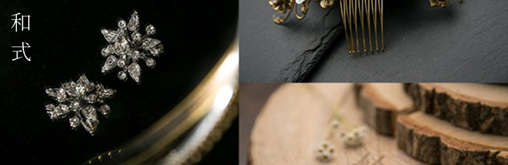
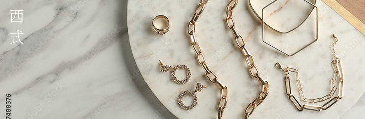

SCROLL
「特別な瞬間」
を一生の思い出に
「特別な瞬間」を一生の思い出に
將「特別的瞬間」變成一生的回憶
SCROLL
Flow
拍攝服務流程
說明
step.
DE & Co. 秉持「日式服務」的細膩與貼心，從諮詢到成品，全程細心跟進
我們堅持價格透明，絕不強迫推銷，讓您輕鬆享受愉悅的婚紗拍攝體驗
顧客心聲
DE&Co. 婚紗攝影的獨特魅力 聽聽喜愛 DE&Co. 的顧客心得分享
Appointment
提供多樣方案預約諮詢
提供多樣方案
預約諮詢
Ｇallery
作品欣賞
札幌店
新宿店
表參道渋谷店
–
–
–
Service
DE&Co.服務特色
DE&Co.
服務特色
Style
拍攝風格
SCROLL
Hair & Make up
妝髮造型
DE&Co.的化妝及髮型師皆為正式員工， 並定期接受技術考核與專業培訓，致力於提供您最優質且多元的造型服務。


豐富多樣的髮飾選擇，讓您自由搭配，展現獨特風格。